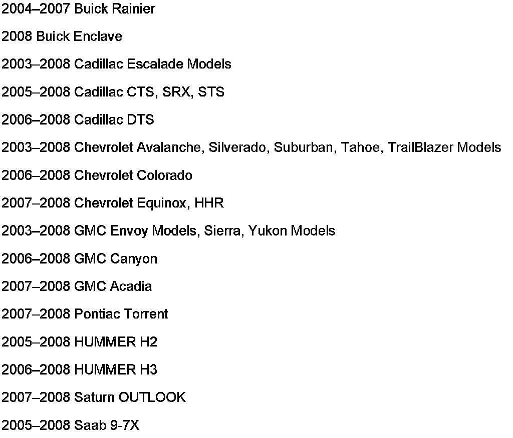
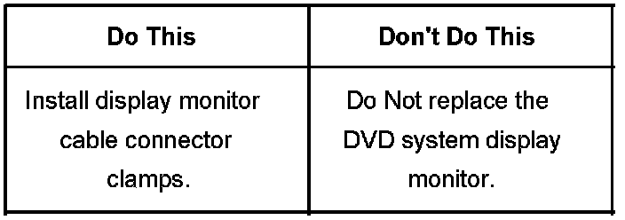
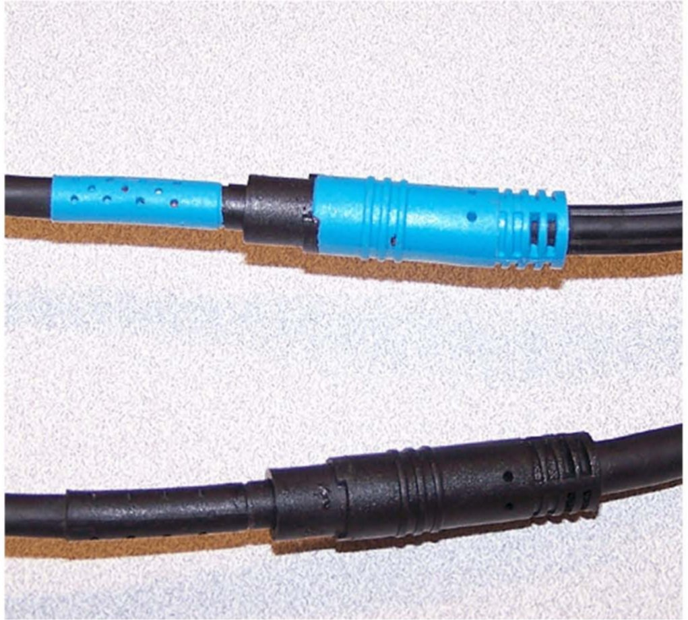
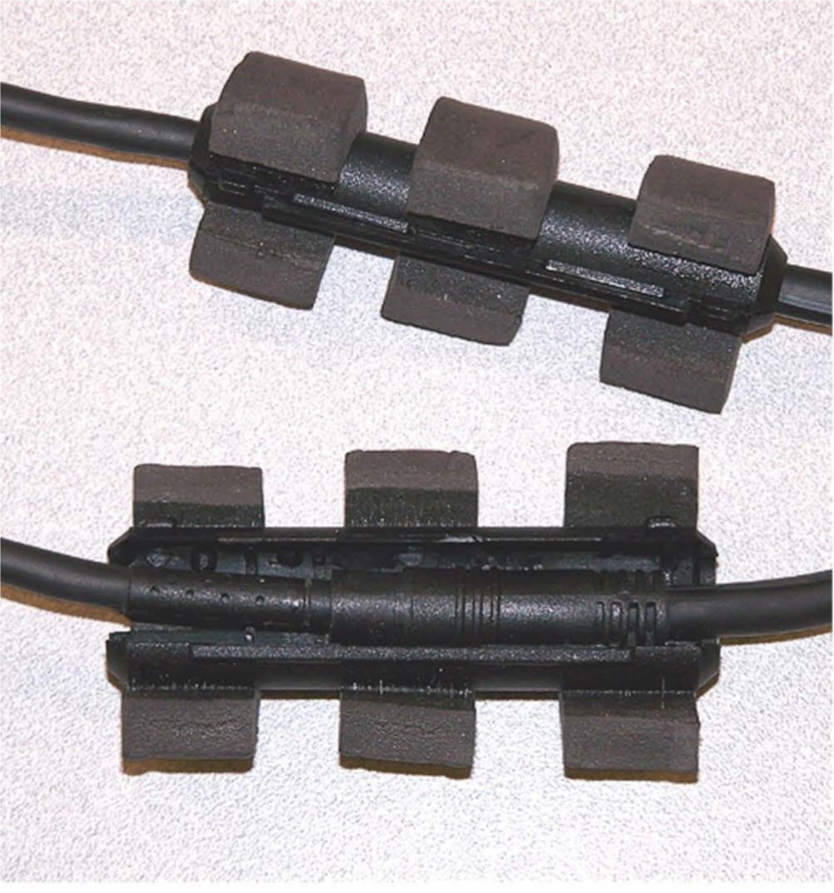
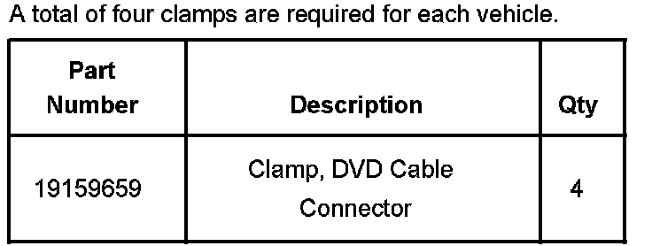
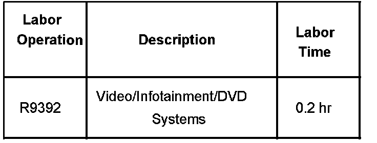
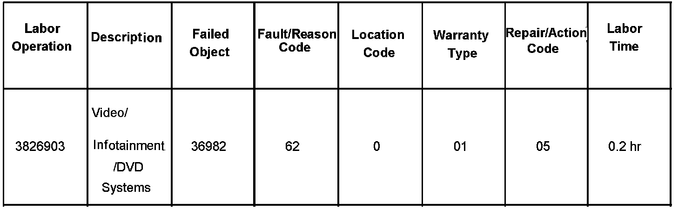

Entertainment System - DVD Monitor Display Inoperative
Bulletin No.: 07-08-44-016ADate: August 28, 2007
TECHNICAL
Subject:
GM Accessories Headrest DVD System Display Monitor Inoperative (Install Cable Connector Clamps)

Models
Supercede:
This bulletin is being revised to update the models affected list. Please discard Corporate Bulletin Number 07-08-44-016 (Section 08 - Body & Accessories).
Condition
Some customers may comment on an inoperative display monitor or monitors in the GM Accessories Headrest DVD System.
Cause
This condition may be caused by a loose connection at the display monitor cable connectors. These connectors are located at the lower rear part of both front seats. Two cables are routed to the display monitor in each seat.
Correction

A number of headrest monitors have been replaced under warranty and in many cases, no trouble was found by the supplier when these units were analyzed. Therefore, technicians should be checking for loose connections and installing cable connector clamps to ensure a positive and robust connection.
Technicians are to install a video cable connector clamp on each cable connector located under each front seat. A total of four cable connector clamps, P/N 19159659, are required for each vehicle.

The illustration above shows a pair of display monitor cable connectors without the cable clamps installed.

The illustration above shows the display monitor cable connectors with the cable connector clamps. The lower cable connector clamp is installed but not locked together. The upper cable connector clamp is closed and locked.
The cable connector clamps have now been added as a permanent component to all GM Accessories Headrest DVD Systems installation kits.

Parts Information
Warranty Information (excluding Saab U.S. Models)

For vehicles repaired under warranty, use the table.
Warranty Information (Saab U.S. Models)

For vehicles repaired under warranty, use the table.

Disclaimer